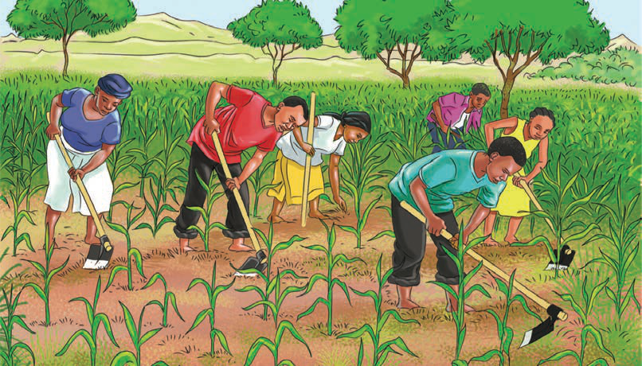

Angalia picha katika Kielelezo namba 1, kisha fanya zoezi linalofuata.

Kielelezo Namba 1: Ujuzi na maarifa katika kutenda
Zoezi la 1
1. Ainisha shughuli wanazofanya katika Kielelezo namba 1.
2. Eleza ni kwa nini wanaweza kufanya shughuli wanazozifanya.